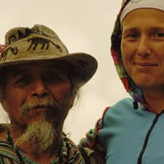

Dobrodošla v Blinkita World
Od deklice, ki je iskala manjkajoče koščke časa, do ženske, ki danes živi med Karibi, starodavno modrostjo Majev in Medicino Časa.
Odkrij svojo Kodo ČasaKo sem bila stara pet let, sem bila prepričana, da na koledarjih nekaj manjka. To vprašanje raziskujem še danes.
Avtorica, hipnoterapevtka, raziskovalka časa, učenka Maya tradicije in ustvarjalka Medicine Časa.
Leta 1999 sem začela osebno preobrazbo in odčarala 51 kilogramov. Iz te poti je nastala Čarovnija Vitkosti in mnogo več.

Leta 2011 sem bila posvečena v Saq I'x pri Tata Pedru Cruzu in postala del nepretrgane zdravilske linije.
Največje iniciacije se pogosto zgodijo doma.
200+ knjig in 200+ hipnoz.
Nihče ne hodi svoje poti sam.